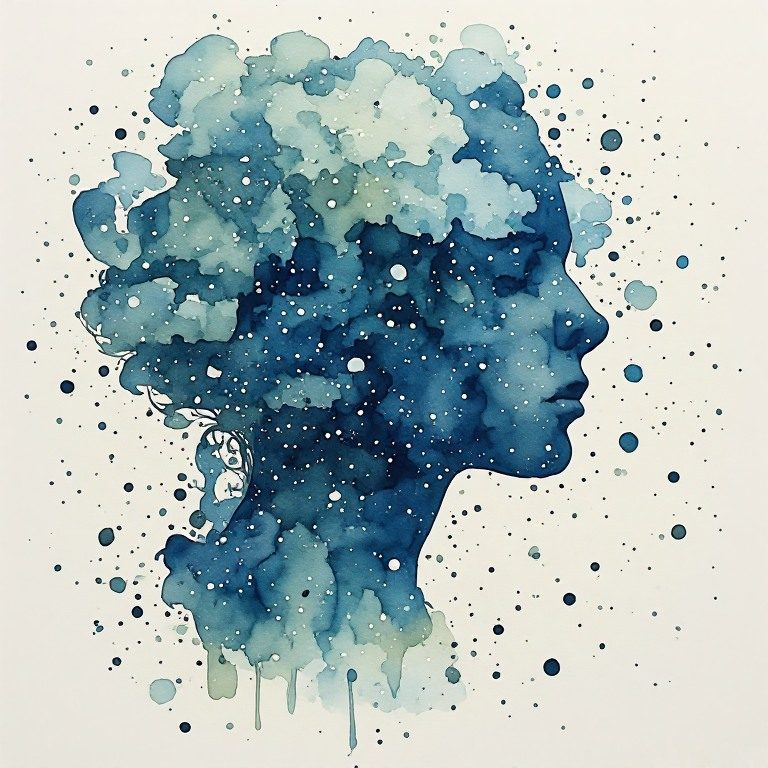

Pillar 2 Reality Is Constructed
← Pillar 1 Not One Self · The Creative Radical Collection · Pillar 3 Grief Doesn't End →
Pillar: Pillar 2 Reality Is Constructed · Across every book
What are you still hoping someone will hand you the real story about?
The hunger is for the one explanation that makes the chaos cohere, the secret underneath the surface. Power arrives as the one who tells it like it is. This pillar holds that there is no bedrock story, it is masks the whole way down, and you can live anyway, without grabbing the totalizing myth that promises to steady you.
Notice
Catch a moment this week when you feel the pull toward one explanation for something confusing, a person, a piece of news, your own situation. Notice the specific relief that comes with the phrase now it all makes sense.
Practice
Pick something confusing you have been trying to solve, a person's behavior, a current event, a decision you cannot settle. Instead of searching for the hidden truth underneath, write down every surface version you actually know. Then stop. Do not dig further tonight.
Reflection
What did it feel like to stop before you found the real answer?
Who has offered you a bedrock explanation recently, and what did they want from you in exchange for the relief of certainty?
